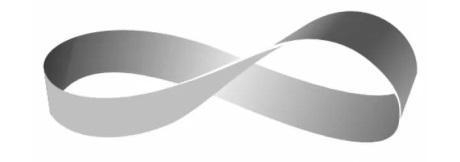

Trong lòng Hạ Tinh Thần đột nhiên xuất hiện dự cảm không lành. Cậu nhìn vào mắt bà chủ, mẫn cảm nói: “Là Bạch Giác Quán ấy... Có phải, có phải có vấn đề gì không?”
Sắc mặt bà chủ lập tức trắng bệch, miệng cũng run lên theo: “Em trai à, Bạch Giác Quán từ năm năm trước đã không có ai ở!”
“Cái, cái gì? Thủ quán Bạch bảo chúng tôi vào ký túc xá ở mà. Có phải chị đang nói đến cung miếu khác không.” Hạ Tinh Thần không khỏi căng thẳng.
“Thủ quán ở đó đã chết, Quan Nương cũng đã chết! Nơi đó đều hoang phế, người to gan đến đó chơi đùa, đều chết ở bên trong. Các cậu ở đó không sợ gặp quỷ à? Thật càn quấy!” Giọng bà chủ đột nhiên the thé: “Mau! Mau gọi bạn cậu ra đi! Thật sự không muốn sống nữa rồi, dám đùa giỡn như vậy!”
Bạch Giác Quán... Năm năm trước...
Hạ Tinh Thần lập tức cảm thấy như sắp xảy ra chuyện, để lại một câu “cảm ơn” rồi chạy thẳng về phía Bạch Giác Quán.
Thiếu niên vội vã chạy đi, vừa hay gặp phải Nghiêm Mục đang đi tới từ phía đối diện với sắc mặt nặng nề. Nghiêm Mục nhìn thấy Mạnh Kiều không ở bên cạnh Hạ Tinh Thần thì biết ngay đã xảy ra chuyện.
Hạ Tinh Thần hô to: “Anh Nghiêm! Kiều Kiều, Kiều Kiều, chị ấy đi vào rồi!”
Nghiêm Mục cũng vừa biết rất nhiều tin tức, trong đó quan trọng nhất là Bạch Giác Quán đã sớm hoang phế. Anh đang muốn nhắc nhở Mạnh Kiều và Hạ Tinh Thần đừng đi vào, lại chỉ nghe thấy Hạ Tinh Thần hô to Mạnh Kiều đi Bạch Giác Quán lấy đồ.
Tối hôm qua không có việc gì có thể là bởi vì bọn họ đông người, nhưng không có nghĩa là hiện tại Mạnh Kiều đơn độc đi vào thì sẽ không có việc gì.
Nghiêm Mục nói với giọng ra lệnh: “Cậu ở chỗ này chờ, tôi đi tìm Mạnh Kiều! Nếu cô ấy đi ra thì đừng để cô ấy đi vào nữa.”
Hạ Tinh Thần ấp úng còn muốn nói thêm, Nghiêm Mục đã khuất khỏi tầm nhìn mà không quay đầu lại.
Lúc Mạnh Kiều bước vào Bạch Giác Quán thì không phát hiện gì lạ cả, một đường bước nhanh qua chính điện. Cô thầm tính toán xem lương khô của mình đủ ăn mấy ngày, không biết tiền mặt ở thế giới hiện thực có thể sử dụng ở chỗ này không? Dẫu sao cô không thể ăn lương khô hết cả ba ngày được!
Cô là đồ ham ăn, nếu để cô ăn bánh quy mỗi ngày, vậy không khác gì ép cô tự sát. Cô lục lọi ba lô nhỏ của mình, sớm biết vậy thì lấy thêm mấy gói thịt bò khô trong siêu thị. Đây là hành xác mà. Động não còn không có thịt ăn, quá đáng thương rồi.
Tuy tiến vào nhiệm vụ thì cô cảm thấy chức năng cơ thể tăng mạnh, không dễ đói, nhưng cô không ăn đồ ngon để đầy bụng mà đương nhiên là để hưởng thụ cuộc sống! Lát nữa từ Bạch Giác Quán ra, cô nhất định phải nhìn xem tiệm ăn nhỏ bên cạnh có đồ gì ăn ngon. Mấy quán ăn nhỏ đều có mùi vị rất khá, hơn nữa có lẽ trong nhiệm vụ sẽ không có đồ gì kỳ lạ.
Hy vọng có thịt lợn xào, thịt xào nấm, thịt viên chiên, tốt nhất còn có sủi cảo tam tiên.
Mạnh Kiều càng nghĩ càng hạnh phúc, cô đeo túi nhỏ rời khỏi phòng.
Đẩy cửa ra.
“… Cộp… Cộp cộp cộp… Cộp…”
Tiếng gì vậy?
Giống như là tiếng bước chân có người từ chỗ tối chậm rãi đến gần.
Cô dừng bước nhìn quanh bốn phía lại không tìm được bất kỳ thứ gì phát ra âm thanh, chẳng lẽ lại là nhạc nền vang lên trong đầu? Nơi này có nguy hiểm? Có thể có nguy hiểm gì?
Quỷ Quan Nương?
Mạnh Kiều lập tức bình tĩnh lại. Nếu thật sự là Quỷ Quan Nương ở gần cô, vậy cô căn bản không có bất kỳ sức chống cự nào.
Thiên phú và đạo cụ của cô nhiều nhất chỉ được coi là dụng cụ hỗ trợ, ngay cả lực công kích cũng không có. Thế này còn đánh gì? Quả thực chỉ có bị người ta đánh tơi bời!
Vậy còn có thể làm sao bây giờ? Đương nhiên là nhấc chân chạy thôi!
Cô gái vừa quay đầu lại thì thấy Lý Bách đứng ở cửa cầu thang nhìn cô không chớp mắt, sắc mặt như thường. Chẳng qua ánh mắt ông ta hơi âm u, thiếu đi vẻ dầu mỡ, thoạt nhìn giống như con rối đồng thau.
“Ông đến đây từ lúc nào?” Mạnh Kiều vô thức lùi về phía sau hai bước, kéo giãn khoảng cách với Lý Bách.
Lý Bách nhếch môi cười rộ: “Có phải cô gái nhỏ sợ không? Sợ thì đến chỗ anh nào. Anh bảo vệ em.”
Ông ta lần theo tay vịn cầu thang tới gần Mạnh Kiều.
Lý Bách này có vẻ cực kỳ quái lạ, hơn nữa vừa rồi đã có nhạc nền nhắc nhở Mạnh Kiều nguy hiểm đang tới gần. Mạnh Kiều dĩ nhiên không thể để ông ta đến gần mình.
Lý Bách bò lên trên cầu thang, tứ chi phát ra âm thanh lách cách, khớp xương dần uốn lượn vào trong theo quá trình tiếp cận rất giống một con nhện khổng lồ.
Đạo cụ của Nghiêm Mục thật sự không lừa cô!
Lý Bách đã biến thành quỷ!
Mạnh Kiều xoay người một cái lách vào phòng mình, từ bên trong đẩy ngã khung giường chặn kín cửa.
“Loảng xoảng…”
Cửa gỗ bị nắm tay Lý Bách thọc ra mấy lỗ thủng rất lớn, đồng tử đen của người đàn ông nhìn cô chằm chằm.
Cô gái không quay đầu lại, chạy hai ba bước đến cửa sổ, kéo cửa sổ ra, nhảy xuống!
“… Bịch!”
Mạnh Kiều từ tầng hai lộn xuống đất, cô bất chấp cơn đau trước mắt, bò dậy chạy ra ngoài Bạch Giác Quán.
Nhưng, đường trước mặt dường như không có điểm cuối, cho dù Mạnh Kiều chạy thế nào vẫn như rơi vào một vòng tuần hoàn vô hạn. Phía trước chính điện là trắc điện, phía trước trắc điện là chính điện. Cô cảm giác mình chạy ra một dải Mobius(*).
(*) Mặt Mobius hay dải Mobius, về toán học là một khái niệm topo cơ bản về một dải chỉ có một phía và một biên.

Bình tĩnh! Bình tĩnh!
Ma dẫn đường, ma dẫn đường mà thôi.
Lý Bách từ phía sau cửa chính điện bò ra. Tứ chi của ông ta gập vào trong, đầu nghiêng sang phải, trên mặt mang theo nụ cười kỳ quái, trong hốc mắt tràn ra nước đặc màu đen. Khoảng cách giữa hai người không đến 30 mét, Mạnh Kiều chỉ có thể chạy vòng quanh. Trước khi cô tìm được phương pháp phá giải thì chỉ có thể chơi trốn tìm với Lý Bách!
Lúc gặp nguy hiểm, sức bộc phá của con người rất đáng kinh ngạc. Mà bản thân Mạnh Kiều cũng am hiểu chạy nước rút. Cô tránh trái tránh phải như con thỏ, ngón tay của cô thì đặt ở đồng hồ Casio trên cổ tay, hơi vô ý một cái cô sẽ quyết định quay ngược thời gian làm lại!
Cô gái trốn đông trốn tây.
Lý Bách đuổi theo phía sau cô không bỏ. Mạnh Kiều có thể nghe thấy rõ tiếng bước chân không phải của con người! Ở nơi rộng như Bạch Giác Quán, cô theo trắc điện lại chạy về tầng hai, đẩy phòng đầu tiên ở hành lang ra.
Ngoài cửa đột nhiên trở nên im ắng, bên ngoài vang lên giọng Nghiêm Mục: “Mạnh Kiều! Mạnh Kiều!”
Mạnh Kiều theo bản năng muốn mở cửa nhưng cô chợt dừng tay trên tay nắm cửa.
Không đúng! Sao Nghiêm Mục biết cô ở chỗ này?
Cô không mở cửa, cũng không lên tiếng, ngừng thở nghe xem trong hành lang yên tĩnh có tiếng gì.
Bỗng nhiên!
Ngoài cửa sổ, Lý Bách bò xuống dưới từ cửa sổ đối diện với Mạnh Kiều, cười tủm tỉm nhìn Mạnh Kiều đang chau mày trong phòng. Trong miệng ông ta phát ra giọng tiếc nuối: “Anh đã nói sẽ bảo vệ em mà, đến chỗ anh nào.”
Bàn tay máu chảy đầm đìa của người đàn ông đẩy cửa kính ra, ông ta thò đầu vào từ ngoài cửa sổ, hơi thở âm u quái đản ập vào trước mặt. Mạnh Kiều dứt khoát túm cái bàn hỏng đập sang, vừa hay đập lên đầu Lý Bách.
Sức chiến đấu của Lý Bách dường như không tốt lắm, trực tiếp bị đập ra một lỗ thủng lớn.
Mạnh Kiều trở tay mở cửa ra.
“Mạnh Kiều!”
Nghiêm Mục đứng ở cửa cầu thang gọi tên cô.
Mạnh Kiều tạm dừng bước chân. Cô còn chưa kịp phân rõ rốt cuộc đây có đúng thật là Nghiêm Mục không thì cửa gỗ phía sau đã vỡ ra ầm ầm. Lý Bách bò ra từ trong phòng, hốc mắt lồi ra, trên trán chảy xuôi máu sền sệt, nghiêng đầu cười ha ha ha: “Tôi không thích cậu, tôi thích cô ấy. Tôi chỉ cần em gái nhỏ này ở bên tôi. Đừng sợ, đừng sợ! Bịt kín mắt sẽ không sợ...”
Mẹ nó! Biến thành quỷ còn buồn nôn như vậy!
Lý Bách nhào về phía Mạnh Kiều, Nghiêm Mục phủi tay một cái, lưỡi dao bay ra, cắt thẳng qua mặt Lý Bách. Ông ta như người nhộng, nước đen đặc sệt từ vết thương chảy ra là hỗn hợp giữa cát bùn và giòi bọ.
Nghiêm Mục không dừng lại chút nào, kéo Mạnh Kiều chạy như điên. Tay chân cô gái không nghe theo điều khiển, đi theo người đàn ông nện bước chạy xuống. Mười ngón tay hai người đan vào nhau, nhiệt độ lòng bàn tay truyền đến cơ thể rồi chạy lên ngực. Sự nôn nóng vừa rồi lập tức biến mất, cô nhìn bóng dáng góc cạnh của người đàn ông.
Lý Bách không đi đường cầu thang mà nhảy thẳng xuống từ giữa không trung, ngã mạnh trên mặt đất, ngay sau đó lại máy móc leo lên như một con zombie.
“Đừng nhìn tôi, nhìn đường.”
Mạnh Kiều: “Không có đường mà...”
Hai người chạy vội, bốn phía đều là tường, không thấy cửa lớn.
Trên vách tường bất chợt xuất hiện hình vẽ hai cô gái sinh đôi nhìn chằm chằm hai người giống như muốn thưởng thức thần thái tuyệt vọng cùng đường của bọn họ.
Lúc này, âm thanh quen thuộc đột nhiên truyền đến: “Kiều Kiều! Anh Nghiêm!”
Nghiêm Mục nhìn về phía phát ra âm thanh, hai người liếc nhau một cái.
Mạnh Kiều đỡ lấy bả vai Nghiêm Mục, chân trái giẫm vào gót chân phải, giày da màu đen lập tức treo ở mắt cá chân.
Cô gái dùng sức đá văng chiếc giày ra!
Hạ Tinh Thần đứng ở ngoài cửa lớn Bạch Giác Quán, mãi không thấy bóng dáng bên trong. Theo lý thuyết Nghiêm Mục đã đi vào mười lăm phút, không đến mức tìm một người mà cần thời gian lâu vậy chứ. Nhưng cậu vẫn đứng ở cửa, Nghiêm Mục dặn cậu nhất định phải đứng chỗ cửa chính, hơn nữa phải gọi tên bọn họ.
Cậu vẫn gọi mãi, nhưng bên trong không hề có hồi âm.
“Kiều Kiều! Kiều Kiều! Hai người có đó không?” Giọng Hạ Tinh Thần đã khàn khàn, cậu biết hai người chắc chắn đã gặp chuyện không ổn ở trong đó.
Đột nhiên, một chiếc giày màu đen bất ngờ từ chính diện bay đến.
Thẳng tắp dừng ở ngực Hạ Tinh Thần!
“Ui da!”
Hai tay cậu bắt lấy giày, kêu lên một tiếng, đôi mắt lại sáng ngời. Chỉ thấy Mạnh Kiều kéo Nghiêm Mục không biết từ chỗ nào chui ra, hai người đồng loạt nhảy lên không trung rồi đáp xuống.
Động tác của Nghiêm Mục dứt khoát lưu loát, mà Mạnh Kiều lại ngã chổng vó.
Mạnh Kiều oán giận bò dậy, xoa xoa miệng: “Không phải chứ! Sao anh lại buông tay? Thứ kia có theo kịp không?”
Thứ bên trong đã không thể gọi là Lý Bách nữa.
“Không theo kịp.” Nghiêm Mục quay đầu lại nhìn: “Có lẽ lực công kích không quá cao.”
Mạnh Kiều vỗ ngực: “Thế này mà bảo lực công kích không cao, ông ta sắp giết tôi luôn đó!”
“Biết sợ mà còn đi vào một mình? Nếu không có tôi thì em cứ trốn bên trong mãi à?” Giọng điệu Nghiêm Mục khá nghiêm khắc, như đang răn dạy học sinh mắc sai lầm: “Đã bảo không được tách ra rồi.”
“Dạ...” Mạnh Kiều tủi thân gục đầu xuống.
Hạ Tinh Thần nhìn mồ hôi trên trán Mạnh Kiều không ngừng chảy xuống, khẽ hỏi: “Xảy ra chuyện gì?”
Sắc mặt cô gái không tốt nhìn cậu: “Đừng đơn độc hành động. Thật sự làm tôi sợ muốn chết.”
Nghiêm Mục: “Tất cả sợ hãi đều do năng lực của em không đủ. Năng lực không đủ thì không cần tự đặt bản thân vào nơi nguy hiểm.”
Mạnh Kiều nhỏ giọng lẩm bẩm: “Thầy ơi, em sai rồi.”
Cô thật sự đã mắc sai lầm. Có thể là bởi vì sự yên tâm khi cùng đội với Nghiêm Mục, khiến cô thả lỏng cảnh giác sẵn có.
Hạ Tinh Thần dùng tay phủi tro bụi trên đầu Mạnh Kiều: “Không có việc gì là được, lần sau không tách nhau ra nữa. Đã xảy ra chuyện gì?”
Cô gái kể lại chuyện xảy ra từ đầu tới cuối, sau đó thở dài: “Lý Bách biến thành quỷ. Quá quái lạ. Ngày hôm qua ông ta còn khẳng định mình sẽ không chết, tôi còn phỏng đoán ông ta chắc chắn có đạo cụ lợi hại nào đó cho nên mới không tính trước mọi việc như vậy.”
Nghiêm Mục phân tích: “Đúng là ông ta có đạo cụ, chắc là loại phòng ngự tuyệt đối. Có điều không biết vì sao mà đạo cụ mất hiệu lực, hoặc là ông ta không tiếp tục sử dụng đạo cụ.”
Mạnh Kiều vỗ vỗ đất trên quần áo: “Anh chắc chắn thế à?”
Nghiêm Mục: “Tôi đã bao giờ lừa em chưa?”
Mạnh Kiều nghe xong câu này thì không vui, cô bẻ ngón tay: “Để tôi tính xem...”
Nghiêm Mục nhìn hành động trẻ con của cô gái thì bật cười: “Thời gian không nhiều lắm. Mạnh đại sư tính xem tôi lừa em khi nào thì không bằng tính nhiệm vụ này xem.”
Mạnh Kiều chớp mắt: “Tính rồi nha. Quẻ cát.”
Hạ Tinh Thần nói chen vào: “Đi thôi, vừa đi vừa nói. Anh Nghiêm cũng tra được gì từ chỗ đó chứ?”
Nghiêm Mục gật đầu.
Mạnh Kiều đi theo hai người, nhưng đầu óc cô nhanh chóng hoạt động, hoàn toàn đắm chìm trong thế giới của mình: “Nghiêm Mục! Vừa rồi lúc tôi nấp trong phòng, là anh gọi tôi à?”
“Không! Lúc em từ trong phòng ra thì tôi mới nhìn thấy em. Có người bắt chước giọng tôi?” Nghiêm Mục hỏi.
Mạnh Kiều gật đầu: “Tôi từng nghe nói có yêu quái biết học tiếng người khác. Vậy sau khi anh vào thì có phát hiện gì không? Còn có hiện tượng kỳ lạ nào không?”
Nghiêm Mục nói: “Tôi thấy Hạ Tinh Thần.”
Hạ Tinh Thần: “Tôi?”
Nghiêm Mục nói: “Đúng. Cậu bảo tôi theo cậu đến trắc điện, nói có phát hiện mới ở chỗ đó.”
Hạ Tinh Thần hỏi: “Sau đó thì sao?”
Nghiêm Mục nghiêm trang nói: “Tìm Mạnh Kiều quan trọng nhất, cho nên tôi không nghe. Hơn nữa nếu cậu không nghe lời đi vào, tôi sẽ đề nghị học sinh của tôi vứt cậu đi.”
Mạnh Kiều: “Tôi không phải học sinh của anh.”
Nghiêm Mục: “Em chủ động gọi thầy.”
Mạnh Kiều ngẩng đầu, thầm nghĩ: Dừng, sao anh không nói một ngày làm thầy, cả đời làm cha luôn đi.
Hạ Tinh Thần chen miệng: “Đi thôi, đi thôi! Đến tiệm cơm nhỏ kia đi. Nơi đó nhìn còn an toàn một tí.”
Cho nên, hiện tại đưa ra kết luận.
Thứ nhất, con quỷ này biết tạo ra ảo giác, dụ dỗ người khác.
Thứ hai, con quỷ này có thể khống chế người đã chết.
Nhưng bọn họ không xác định rốt cuộc con quỷ này có phải Quỷ Quan Nương không.
Ba người tìm được tiệm cơm nhỏ vừa rồi, bà chủ thấy Hạ Tinh Thần trở về mới yên lòng: “May không xảy ra chuyện gì. Bạch Giác Quán kia không phải chỗ chơi đùa gì, may mà đều còn sống trở về.”
Hạ Tinh Thần chân thành nói lời cảm ơn: “Cảm ơn bà chủ.”
Bà chủ xua tay: “Không sao! Các cô cậu là người bên ngoài đến nên không hiểu mấy thứ này, về sau đừng chạy loạn. Ba cô cậu ăn gì không? Vừa hay đến giờ cơm trưa rồi.”
Mạnh Kiều nhìn thực đơn treo trên tường, bắt đầu lẩm bẩm: “Thịt băm cà tím, đậu que xào, trứng gà xào cà chua, cơm thịt kho tàu, cơm ớt xanh xắt hạt lựu...”
Cô gái nghiêng đầu: “Bà chủ, có cơm thịt xào không?”
Bà chủ lấy giấy bút ra bắt đầu ghi lại: “Có! Một suất mười ba tệ, muốn mấy suất?”
… Leng keng
Hệ thống nhắc nhở, tỉ lệ đổi điểm và tiền trong thế giới phó bản là 1:1. Xin hỏi có đổi không?
Mạnh Kiều: “Cho tôi 39 tệ!”
Giao dịch thành công.